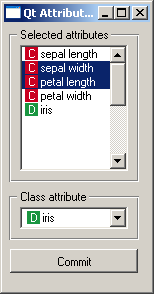

This is documentation for Orange 2.7. For the latest documentation, see Orange 3.
Context-Dependent Settings¶
You have already learned about storing widget settings. But there’s more: some settings are context dependent. Open Orange Canvas and observe the scatter plot - feed it some data, select two attributes for x- and y-axis, select some examples... and then give it some other data. Your settings get lost. Or do they? Well, change back to the original data and you will see the same two attributes on the axes and even the same examples selected.
What happens is that Orange remembers the settings (chosen attributes etc.) and ties them with the data domain. The next time it gets the data from the same (or similar enough) domain, the settings will be reused. The history of an arbitrary number of domains can be stored in this manner.
To learn how to do it yourself, consider the widget below used for selecting a subset of attributes and the class attributes (note that a better widget for this task is already included in your Orange installation).
The widget gets examples on the input and outputs the same examples with the attributes and the class chosen by the user. We’d like to somehow store the user’s selection.
Here’s the widget’s __init__() function.
Part of OWAttributeSampler.py
def __init__(self, parent=None, signalManager=None):
OWWidget.__init__(self, parent, signalManager, 'AttributeSampler')
self.inputs = [("Examples", Orange.data.Table, self.dataset)]
self.outputs = [("Examples", Orange.data.Table)]
self.icons = self.createAttributeIconDict()
self.attributeList = []
self.selectedAttributes = []
self.classAttribute = None
self.loadSettings()
OWGUI.listBox(self.controlArea, self, "selectedAttributes",
"attributeList",
box="Selected attributes",
selectionMode=QListWidget.ExtendedSelection)
OWGUI.separator(self.controlArea)
self.classAttrCombo = OWGUI.comboBox(
self.controlArea, self, "classAttribute",
box="Class attribute")
OWGUI.separator(self.controlArea)
OWGUI.button(self.controlArea, self, "Commit",
callback=self.outputData)
self.resize(150,400)
Note that we are strictly using controls from OWGUI. As for the usual settings, if you use Qt controls directly, their state won’t get synchronized with the widget’s internal variables and vice versa. The list box is associated with two variables: attributeList contains the attributes (as tuples with the name and the type), and selectedAttributes is a list with indices of selected attributes. Combo box will put the index of the chosen class attribute into classAttribute.
When the widget gets the data, a function dataset is called:
def dataset(self, data):
self.classAttrCombo.clear()
if data:
self.attributeList = [(attr.name, attr.varType) for attr in data.domain]
self.selectedAttributes = []
for attrName, attrType in self.attributeList:
self.classAttrCombo.addItem(self.icons[attrType], attrName)
self.classAttribute = 0
else:
self.attributeList = []
self.selectedAttributes = []
self.classAttrCombo.addItem("")
self.data = data
self.outputData()
def outputData(self):
if not self.data:
self.send("Examples", None)
else:
newDomain = Orange.data.Domain(
[self.data.domain[i] for i in self.selectedAttributes],
self.data.domain[self.classAttribute])
newData = Orange.data.Table(newDomain, self.data)
self.send("Examples", newData)
Nothing special here (yet). We fill the list box, deselect all attributes and set the last attribute to be the class attribute. Output data is put into a separate function because it’s called by dataset and when the user presses the “Apply” button.
The widgets is functionally complete, but it doesn’t remember anything. You can try to put the three variables (attributeList, selectedAttributes and classAttribute) in the settingsList, as you’ve seen on the page about settings, but it won’t work. It can’t: settings are saved and loaded only when the widget is created, not every time it gets a new signal. Besides, the ordinary settings in the settingsList are not context dependent, so the widget would usually try to assign, say, the class attribute which doesn’t exist in the actual domain at all.
To make the setting dependent on the context, we put
contextHandlers = {
"": DomainContextHandler(
"",
[ContextField("classAttribute", DomainContextHandler.Required),
ContextField("attributeList",
DomainContextHandler.List +
DomainContextHandler.SelectedRequired,
selected="selectedAttributes")])}
at the same place where we usually declare settingsList.
“Contexts” may be defined by different things, but settings most commonly depend on the domain of the examples. Such settings are taken by a context handler of type DomainContextHandler. We tell it about the fields that it should control: the first is classAttribute, and the other two form a pair, attributeList contains the attributes and selectedAttributes is the selection. The latter has the flag DomainContextHandler.List which tells the context handler that the property in question is a list, not an ordinary field.
And what is “Required” and “SelectedRequired”? These are important in domain matching. Say that you loaded the car data, selected attributes price, maint and lug_boot and set the class attribute to acc. Now you load a modified car data in which the attribute doors is missing. Can the settings be reused? Sure, doors was not selected, so this attribute is not really needed. The new domain is thus not exactly the same as the one with which the context was saved, but nothing essential is missing so the context is loaded.
A different thing is if the new set misses attributes price or acc; in this case, the old settings cannot and should not be reused. So, this is the meaning of DomainContextHandler.Required and DomainContextHandler.SelectedRequired: a stored context doesn’t match the new data if the data lacks the attribute that the context stores as “classAttribute”. And, the new data also has to have all the attributes that were selected in the stored context. If any of the other attributes misses, it doesn’t matter, the context will still match and be used.
As you have guessed, we can also have optional attributes (DomainContextHandler.Optional); sometimes certain attribute doesn’t really matter, so if it is present in the domain, it’s going to be used, otherwise not. And for the list, we could say DomainContextHandler.List + DomainContextHandler.Required in which case all the attributes on the list would be required for the domain to match.
The default flag is DomainContextHandler.Required, and there are other shortcuts for declaring the context, too. The above code could be simplified as
contextHandlers = {
"": DomainContextHandler(
"",
["classAttribute",
ContextField("attributeList",
DomainContextHandler.SelectedRequiredList,
selected="selectedAttributes")])}
Why the dictionary and the empty string as the key? A widget can have multiple contexts, depending, usually, on multiple input signals. These contexts can be named, but the default name is empty string. A case in which we would really need multiple contexts has yet to appear, so you shall mostly declare the contexts as above. (Note that we gave the name twice - the first empty string is for the key in the dictionary and with the second we tell the context handler its own name.)
So much for declaration of contexts. The ordinary, context independent settings load and save automatically as the widget is created and destroyed. Context dependent settings are stored and restored when the context changes, usually due to receiving a signal with a new data set. This unfortunately cannot be handled automatically - you have to add the calls of the appropriate context changing functions yourself. Here’s what you have to do with the function dataset
def dataset(self, data):
self.closeContext()
self.classAttrCombo.clear()
if data:
self.attributeList = [(attr.name, attr.varType)
for attr in data.domain]
self.selectedAttributes = []
for attrName, attrType in self.attributeList:
self.classAttrCombo.addItem(self.icons[attrType], attrName)
self.classAttribute = 0
else:
self.attributeList = []
self.selectedAttributes = []
self.classAttrCombo.addItem("")
self.openContext("", data)
self.data = data
self.outputData()
We added only two lines. First, before you change any controls in the widget, you need to call self.closeContext (the function has an optional argument, the context name, but since we use the default name, an empty string, we can omit it). This reads the data from the widget into the stored context. Then the function proceeds as before: the controls (the list box and combo box) are filled in as if there were no context handling (this is important, so once again: widget should be set up as if there were not context dependent settings). When the controls are put in a consistent state, we call self.openContext. The first argument is the context name and the second is the object from which the handler reads the context. In case of DomainContextHandler this can be either a domain or the data. openContext will make the context handler search through the stored context for the one that (best) matches the data, and if one is find the widget’s state is set accordingly (that is, the list boxes are filled, attributes in it are selected etc.). If no context is found, a new context is established and the data from widget is copied to the context.
What can be stored as a context dependent setting? Anything, even the state of check boxes if you want to. But don’t do that. Make some of your checkboxes context dependent (so that they will change when the new data arrives) and the use of the widget will be completely chaotic since nobody will know what changes and what stays the same. Make all your controls context dependent and the widget will become useless as it will reset to the defaults every time some new data arrives. Bottom line, regarding to controls, make as little context dependent settings as possible - the context dependent controls will usually be limited to list boxes and combo boxes that store attribute names.
But there are other things that you can put into the context. Just remember the scatter plot’s ability to remember the example selection - which is surely not stored in a simple list box. How does it do it? Here are two methods it defines:
def settingsFromWidgetCallback(self, handler, context):
context.selectionPolygons = []
for key in self.graph.selectionCurveKeyList:
curve = self.graph.curve(key)
xs = [curve.x(i) for i in range(curve.dataSize())]
ys = [curve.y(i) for i in range(curve.dataSize())]
context.selectionPolygons.append((xs, ys))
def settingsToWidgetCallback(self, handler, context):
selections = context.selectionPolygons
for (xs, ys) in selections:
c = SelectionCurve(self.graph)
c.setData(xs,ys)
key = self.graph.insertCurve(c)
self.graph.selectionCurveKeyList.append(key)
settingsFromWidgetCallback is called by the context handler to copy the settings from the widget to the context, and settingsToWidgetCallback writes the settings back to the widget. Their arguments, besides self, are the context handler and the context. Whatever settingsFromWidgetCallback stores into the context, stays there, gets saved when the canvas is closed and loaded when it’s opened again. setttingsToWidgetCallback can read these fields and restore the widget’s state (the example selection, in this case) accordingly.
selectionPolygons is not registered by the context handler the way we registered attributeList, selectedAttributes and classAttribute above, since the context handler doesn’t need to know and care about selectionPolygons.
When writing such callback functions make sure that the data you store is picklable and short enough, so you won’t blow up the .ini files that store these settings.